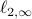

Yuxin Chen
 |
I am an assistant professor of Electrical Engineering, and an associated faculty member of Computer Science, Applied and Computational Mathematics, and the Center for Statistics and Machine Learning at Princeton University. Prior to joining Princeton in Spring 2017, I was a postdoctoral scholar in the Department of Statistics at Stanford University supervised by Prof. Emmanuel Candès. I completed my Ph.D. in Electrical Engineering at Stanford University in Fall 2014, under the supervision of Prof. Andrea Goldsmith. Research areas: mathematical foundations of data science, optimization, high-dimensional statistics, statistical learning, information theory, and their applications to medical imaging and computational biology. Contact: Email: yuxin dot chen at princeton dot edu |
Recent news
My first student Cong Ma will join the Department of Statistics at the University of Chicago as an assistant professor in 2021. Congratulations, Cong!!!
Our paper “Inference and Uncertainty Quantification for Noisy Matrix Completion” has been accepted to Proceedings of the National Academy of Sciences (PNAS), 2019 (direct submission) [full version].
Our paper “Implicit Regularization in Nonconvex Statistical Estimation: Gradient Descent Converges Linearly for Phase Retrieval, Matrix Completion, and Blind Deconvolution” has been accepted to Foundations of Computational Mathematics, 2019.
Our (invited) overview article “Nonconvex Optimization Meets Low-Rank Matrix Factorization: An Overview” has been published in IEEE Transactions on Signal Processing, 2019 [full version].
Yuejie Chi and I gave a tutorial on ‘‘Taming Nonconvexity in Information Science’’ at ITW 2018.
I received the 2019 AFOSR Young Investigator Program (YIP) Award.
Teaching
Sping 2020: ELE201: Information and Signals
Fall 2019: ELE522: Large-Scale Optimization for Data Science (Princeton Engineering Commendation List for Outstanding Teaching)
Fall 2018: ELE538: Mathematics of High-Dimensional Data (Princeton Engineering Commendation List for Outstanding Teaching)
Fall 2018: ELE382: Probabilistic Systems and Information Processing
Spring 2018: ELE538C: Large-Scale Optimization for Data Science (Princeton Engineering Commendation List for Outstanding Teaching)
Selected recent papers
C. Cheng, Y. Wei, Y. Chen, “Inference for Linear Forms of Eigenvectors under Minimal Eigenvalue Separation: Asymmetry and Heteroscedasticity,” 2020. [paper][slides]
Y. Chen, J. Fan, C. Ma, Y. Yan, “Bridging Convex and Nonconvex Optimization in Robust PCA: Noise, Outliers, and Missing Data,” 2020. [paper]
C. Cai, G. Li, H. V. Poor, Y. Chen, “Nonconvex Low-Rank Symmetric Tensor Completion from Noisy Data,” 2019 (appeared in part in NeurIPS 2019). [paper]
C. Cai, G. Li, Y. Chi, H. V. Poor, Y. Chen, “Subspace Estimation from Unbalanced and Incomplete Data Matrices:  Statistical Guarantees,” 2019. [paper]
Y. Chen, J. Fan, C. Ma, Y. Yan, “Inference and Uncertainty Quantification for Noisy Matrix Completion,” Proceedings of the National Academy of Sciences (PNAS), vol. 116, no. 46, pp. 22931–22937, Nov. 2019 (direct submission). [Arxiv][PNAS version][slides]
Y. Chen, Y. Chi, J. Fan, C. Ma, Y. Yan, “Noisy Matrix Completion: Understanding Statistical Guarantees for Convex Relaxation via Nonconvex Optimization,” 2019. [paper][slides]
Y. Chen, C. Cheng, J. Fan, “Asymmetry Helps: Eigenvalue and Eigenvector Analyses of Asymmetrically Perturbed Low-Rank Matrices,” accepted to Annals of Statistics, 2020. [paper][slides]
Y. Chi, Y. Lu, Y. Chen, “Nonconvex Optimization Meets Low-Rank Matrix Factorization: An Overview,” IEEE Transactions on Signal Processing, vol. 67, no. 20, pp. 5239-5269, October 2019 (invited overview article). [TSP version][Arxiv][slides]
Y. Chen, Y. Chi, J. Fan, C. Ma, “Gradient Descent with Random Initialization: Fast Global Convergence for Nonconvex Phase Retrieval,” Mathematical Programming, vol. 176, no. 1-2, pp. 5-37, July 2019. [Arxiv][slides]
C. Ma, K. Wang, Y. Chi, Y. Chen, “Implicit Regularization in Nonconvex Statistical Estimation: Gradient Descent Converges Linearly for Phase Retrieval, Matrix Completion, and Blind Deconvolution,” accepted to Foundations of Computational Mathematics, 2017 (appeared in part in ICML 2018). [main text][supplement][full paper (Arxiv)][slides]
Y. Chen, J. Fan, C. Ma, K. Wang, “Spectral Method and Regularized MLE Are Both Optimal for Top-K Ranking,” Annals of Statistics, vol. 47, no. 4, pp. 2204-2235, August 2019. [Arxiv][slides]
P. Sur, Y. Chen, E. J. Candes, “The Likelihood Ratio Test in High-Dimensional Logistic Regression Is Asymptotically a Rescaled Chi-Square,” Probability Theory and Related Fields, vol. 175, no. 1-2, pp.487–558, October 2019. [slides][code]
Y. Chen and E. J. Candes, “The Projected Power Method: An Efficient Algorithm for Joint Alignment from Pairwise Differences,” Communications on Pure and Applied Mathematics, vol. 71, issue 8, pp. 1648-1714, August 2018. [slides][code]
Y. Chen and E. J. Candes, “Solving Random Quadratic Systems of Equations Is Nearly as Easy as Solving Linear Systems,” Communications on Pure and Applied Mathematics, vol. 70, issue 5, pp. 822-883, May 2017 (appeared in part in NIPS 2015 (oral)). [slides][website]